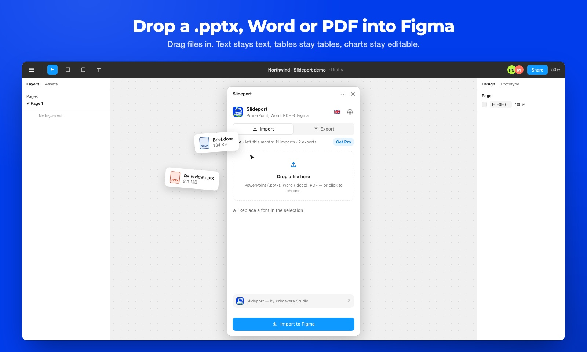
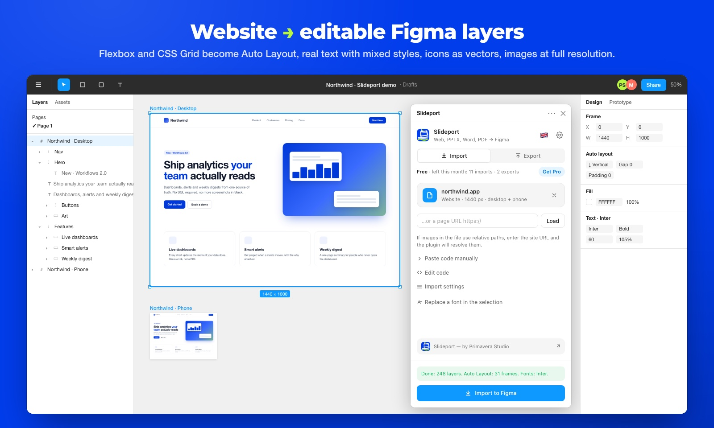
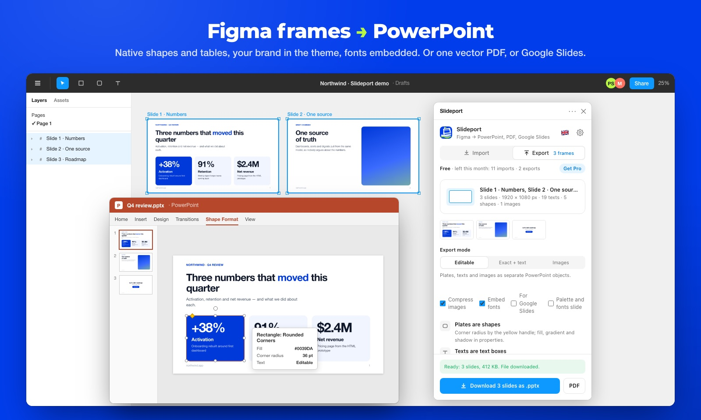

Getting started
- Open Slideport on Figma Community and click Open in… or Try it out.
- In any Figma design file run it from Plugins → Slideport (or ⌘ / and type “Slideport”).
- The window has two tabs: Import and Export. The gear opens Settings, the flag switches between English and Russian.

After you drop a file, an Import settings sheet appears with options for that file type only. Tick Don't show again to import straight away with your defaults. Bring the sheet back with the Import settings link under the file, or hold ⌥ while clicking Import.
Website by URL
Paste an address into the field on the Import tab and click Load. The page is fetched through the Slideport proxy, so it works with almost any public site. Sites built with React, Vue or Next are rendered in a real browser on the server first.
Options
- Layout size: the viewport width; the plugin also finds fixed-size slides and banners by itself.
- + tablet 768, + phone 390: import several viewports at once, each as its own frame.
- Auto Layout from flex blocks: flex containers become Auto Layout frames with editable padding and gaps. Grid stays absolute for now.
- High-resolution images: picks the largest
srcsetvariant. - Page theme: light or dark, if the site supports both.
What comes across
- Text with mixed styles in one layer: font, size, weight, line height, letter spacing, case, underline, alignment, gradient text.
- Backgrounds: colors, linear and radial gradients, images with
coverandcontain. - Corner radii, borders (including one side and dashed), shadows, background blur, opacity.
<img>,<svg>including sprite icons,<canvas>, a frame of<video>.- Inputs with placeholders, buttons, list markers, decorative
::beforeand::after. - Scroll-reveal animations: the plugin scrolls the page so hidden blocks appear.

HTML files
Drop a file onto the Import tab or click the drop zone to pick one. Supported: .html, a .zip with a whole site, a saved .mhtml page, an .eml email. You can also paste code under Paste code manually.
Pages behind a login can't be fetched by URL. Save them from your browser with File → Save Page As and drop the file instead.
PowerPoint import
Drop a .pptx or .potx. Every slide becomes a frame and the slides line up in a row. Everything is parsed inside the plugin; the file is not uploaded.
- Text boxes become text layers with font, size, bold, color, line height, bullets and numbering. Styles are inherited from layouts and masters.
- Shapes become rectangles and ellipses with radius, fill, gradient, stroke and shadow. Arrows, stars and custom outlines become vectors.
- Pictures stay separate layers with cropping: PNG, JPEG, GIF, SVG.
- Groups become frames, tables become a grid of cells with text.
- Slide backgrounds, master and layout decorations, theme colors and fonts.
- Speaker notes and comments, including threaded replies, become stickies to the right of the slide: yellow for notes, blue for comments.
Charts, SmartArt, OLE objects and EMF, WMF or TIFF pictures come in as grey placeholders, and the plugin lists them after import. Flipped shapes come in without the flip.
PDF import
Drop a .pdf. The card shows the page count and size. In the settings sheet you can choose pages, for example 1-3, 5, and how vector graphics come in. Every page becomes a frame at 1 pt = 1 px, so a PDF exported from Figma comes back at its original size. The file is parsed inside the plugin and not uploaded.
- Lines of text are joined into paragraphs, keeping font, weight, italic, size, color and line height for each run. Rotated text stays rotated.
- Pictures are separate layers; rectangular crops are kept.
- Plates, rounded rectangles, ellipses and linear gradients become Figma shapes.
- Other vector graphics come in as paths, grouped by area, or as a backdrop: one 2× picture under the text, for maps and charts with thousands of lines.
Scanned pages come in as pictures. Password-protected PDFs don't open. Because text in a PDF is only lines, columns or table cells set very close together may merge into one layer.
Export to PowerPoint
- Select one or more frames. Each frame becomes a slide; the slide size follows the first frame.
- Open the Export tab, choose PowerPoint · PDF and pick a mode.
- Click Download .pptx.
| Mode | What you get |
|---|---|
| Editable | Plates as shapes, texts as text boxes, pictures as pictures. Everything is editable. |
| Exact + text | Each slide is an exact picture with text boxes on top. Pixel-perfect, text stays editable. |
| Images | Each slide is one picture. |
Slides follow the order of frames on the canvas: by rows, left to right. Before export you see thumbnails and counts of texts, shapes and pictures. After export a report shows what stayed editable, what became a picture and why, and which fonts are needed.
In PowerPoint
- Plates are Rounded Rectangle shapes; change the radius with the yellow handle. Fill, gradient, stroke and shadow are normal shape properties.
- Text boxes keep font, size, bold, italic, color, line height and letter spacing for each run.
- Pictures keep cropping and radius; rotated pictures stay rotated.
- Icons and vectors are SVG pictures: right-click → Convert to Shape to make them shapes.
- Nested frames become groups.
What PowerPoint can't do is simplified: of several shadows the strongest is kept, and different corner radii become equal, except top-only and bottom-only. Photos over 300 KB without transparency are re-encoded as JPEG when Compress images is on. Fonts must be installed on the computer where the deck is opened.

Export to PDF
Next to Download .pptx is PDF. One selected frame becomes a vector PDF made by Figma. Several frames become one PDF with a page per frame, rendered at 2×.
Export to HTML
On the Export tab choose HTML · site, select frames and click Download site (.zip). The archive has index.html, styles.css and an assets/ folder.
- Auto Layout becomes flexbox: direction, gaps, padding, alignment, fill. Everything else is positioned by coordinates.
- Text stays live text with paragraphs, mixed styles and links. Fills, gradients, strokes, radii, shadows, blur and opacity become CSS.
- Pictures are files in
assets/; icons and vectors are inline SVG. Class names come from layer names. - Several frames: stacked sections on one page, or separate files with a shared CSS.
- Everything in one file puts images and styles inside a single .html. Google Fonts are linked when the font is available there.
The layout has the frame's fixed width and no responsive rules. It's a starting point for a developer, not a finished responsive site.
Settings
- Language: English or Russian.
- Import and export defaults: the options the settings sheet starts with.
- Font substitution: when a font is installed under a different name than on the page, for example
Alfa → Alfa Interface Sans. Separate several with;. The plugin remembers it. - Proxy for URLs: the default Slideport proxy, or your own address and key.
- Anonymous statistics: on by default, turn off any time. See Privacy.
- Send feedback: a short form; add an email if you want a reply.
Limits
- Pages behind a login, and sites that block data-center traffic, can't be fetched by URL. Save them as .html and drop the file.
- CSS grid comes in with absolute positions. Rotation is kept for pictures, icons and single texts, not for rotated blocks with content.
- If a font is missing in Figma, the closest one is used (usually Inter) and the plugin names the replaced fonts.
- Images from sites that forbid loading come in as grey placeholders with a label.
- In .pptx: charts, SmartArt and EMF/WMF pictures are placeholders. In PDF: scans are pictures, close columns may merge.
Pricing
| Plan | Price | What's included |
|---|---|---|
| Free | $0 | 15 imports and 3 exports (PowerPoint, PDF or HTML) per calendar month. No account needed. |
| Pro | $5/month or $29/year | Unlimited imports and exports. 7-day free trial in the plugin, 14-day money-back guarantee. |
Pro is sold on the pricing page through lava.top. When the free limit runs out, or any time you click Get Pro, the plugin opens that page. After paying, the page shows your personal license key: open Settings → Slideport Pro and enter the email you used at checkout and that key. Cancel any time in your lava.top account (My purchases). Refunds: within 14 days, see the refund policy.
Privacy
- Conversion runs inside the plugin. Nothing from your Figma file is uploaded anywhere.
- Files you drop never leave your computer.
- URL imports only: the page address goes to the Slideport proxy so it can fetch the page and its images.
- Anonymous usage statistics help fix bugs. No design content, texts or page URLs are included. Turn them off in Settings.
Full text: Privacy policy.
FAQ
Why are some texts in Inter after import?
The font isn't available in Figma under that name. Install it, or add a substitution in Settings → Font substitution.
A site doesn't load by URL.
It's probably behind a login or blocks servers. Save the page from your browser as .html or .mhtml and drop the file.
The fonts look different in PowerPoint.
PowerPoint uses fonts installed on the computer where the deck is opened. The export report lists the fonts your slides need.
Does the free plan reset?
Yes, on the first day of every calendar month.
Can I run my own proxy?
Yes. Set its address and key in Settings → Proxy for URLs.
Support
Found a bug or a page that imports badly? Open an issue with the link or the file, if you can share it. You can also use Send feedback in the plugin settings or comment on the Figma Community page.